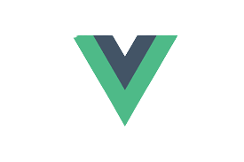
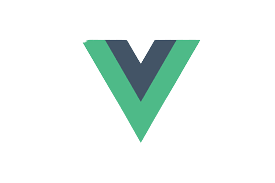

It all started with a “Hello world!” printed on a screen. My heart started to race and my thoughts were all over.
Imagine, all the things I could create and communicate through a single page.
I fell in love with
FrontEnd Development
from the start and it’s been a crazy five years.
Then, I got my first job, met interesting people, people who were incredibly excited about Agile methodologies the best practices for coding, and prioritizing user experience. I learned a lot, moved on to another company, and then another, and I always encountered more exciting experiences.
I have volunteered on a couple of programs, such as WILL (Alianzas Olascoaga), a mentoring program to help young women to get into STEM careers giving them confidence and guidance about the fears they have, and FrontEnd Foxes (a tech community for women), planning the meetups for the community in Mexico City.
I participated in the last three Dev Day 4 Women, giving lightning talks about the interview process and how important it is to develop your soft skills in the tech industry.
Last but not least, I recently started a TikTok account @lababito to share some of the tips and tricks that helped me grow as a woman, as a developer and as a person.
Analyzed, planned and develop new features for the Saas human resources management application. Ensure coding standard and good practices in all the user centered solutions. Refactored old components and features improving performance and usability. Also, helped migrating from css preprocessor to TailwindCss for all the visual styling.
Applied scrum methodology, analyzed all the requirements and planned them according to the product and design roadmap solving present issues on the platform or creating new features to solve another user problem.
Constantly negotiating the delivery time and feature scopes to get the best solutions covering all the user needs and requirements.
Helped developers estimating tasks and communicating with all the other teams in order to obtain all the resources that my team needed so they can create the solutions on time.
Always provided posible solutions for every task and performing code reviews to ensure code quality.
Creating and mantaining projects for companies with social impact.
Creating digital solutions for different engineering teams to visualized the data needed to take quick decisions to improve business. Involved in all the development process, from establishing the requirements to develop and deliver it, always looking to maintain the look and feel of the company.